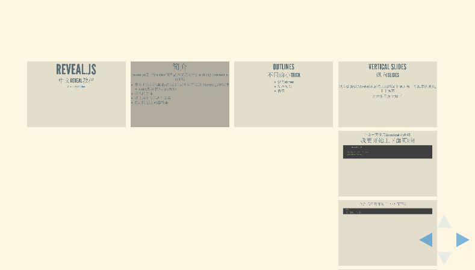
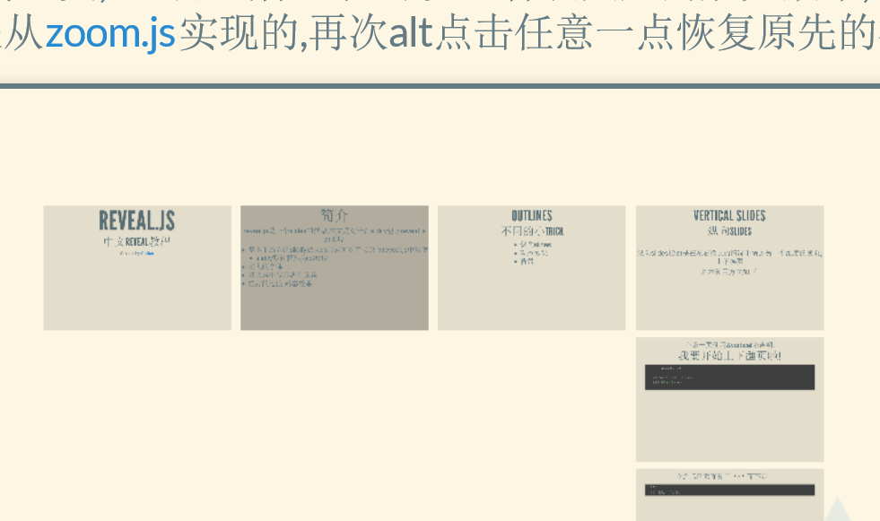

reveal.js是一个slides的框架,本文是对于在slidify包下reveal.js的实现:
超长的YAML,不过好消息是基本不需要做太多的更改...
---
title: Checking Reveal.js
author: Ramnath Vaidyanathan
mode : selfcontained
framework: revealjs
hitheme : zenburn
revealjs:
theme: Sky # {solarized,Black,White,League,Sky,Beige,Simple,Serif, Night,Moon}
transition: slide # {fade/slide/convex/concave/zoom}
center: "true"
url: {lib: "."}
bootstrap:
theme: amelia
navbar:
title: Slidify
items:
- {item: Home, href: index, icon: home}
- {item: "Start", href: start, icon: signin}
- {item: Author, href: about, icon: pencil}
- {item: Style, href: style, icon: hand-right, class: dropdown,
dropdown: true, menu: [
{item: io2012, href: 'samples/intro'},
{item: deck.js, href: 'samples/deck.js'},
{item: shower, href: 'samples/shower'},
{item: landslide, href: 'samples/landslide'}
]
}
- {item: Customize, href: customize, icon: gift}
- {item: Extend, href: extend, icon: cogs}
- {item: Publish, href: publish, icon: github}
---
<script src="http://ajax.googleapis.com/ajax/libs/jquery/1.9.1/jquery.min.js"></script>
纵向slides指的是在左右换页的情况下增加另一个维度的换页,上下换页
基本使用方法如下:
在第一页使用&vertical来声明:
--- &vertical
## Vertical Slides
### 纵向slides
...
在之后的页面使用 *** 而不是 ---:
***
## 这是一个子页
总的来说就是这样:
--- &vertical
## Vertical Slides
### 纵向slides
***
## 这是一个子页
***
## 子页2
在任何一页,按下ESC键会进入总览,可以从这里选择你需要查看的页面.

在任何一页,ALT加鼠标左键可以查看该点处的放大效果,这个功能是从zoom.js实现的,再次alt点击任意一点恢复原先的视角.

可以自由的设置切换页面的方式,点击下面的选项来查看不同的切换效果
Cube - Page - Concave - Zoom - Linear - Fade - None - Default
在Rmd文件的YAML部分修改slides的切换方式:
transition: slide # {fade/slide/convex/concave/zoom}
transition: convex
Reveal.js支持以下所有主题:
Sky - Beige - Simple - Serif - Night - Default - Solarized - Moon
在Rmd文件的YAML部分修改slides的主题:
theme: solarized
theme: White
--- ds:alert
--- ds:blackout
--- ds:soothe
>- > - any type
> - of view
> - __fragments__
<script>
$('ul.incremental li').addClass('fragment')
</script>
> - Point 1
> - .highlight-red Point 2
> - .grow Point 3
<script>
$('ul.incremental li').addClass('fragment')
</script>